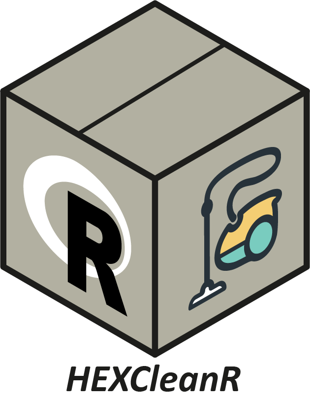

HEXcleanR 
Willkommen bei HEXCleanR – Dem Werkzeugkasten für die Aufbereitung und Bereinigung von HEX-Daten.
🚀 Schnellstart
1. Voraussetzungen:
Installiere das Hilfspaket remotes, falls noch nicht vorhanden:
install.packages("remotes")2. Installation von GitHub:
remotes::install_github("Stifterverband/HEXCleanR")3. Paket aktualisieren:
Führe den Installationsbefehl erneut aus, um die neueste Version zu erhalten.
4. Installation eines bestimmten Branches/Commits:
remotes::install_github("Stifterverband/HEXCleanR", ref = "branchname")Mit force = TRUE kann eine erzwungene Neuinstallation erfolgen:
remotes::install_github("Stifterverband/HEXCleanR", force = TRUE)📖 Was macht HEXCleanR?
HEXCleanR bietet einen modularen Werkzeugkasten für die Datenbereinigung und -prüfung im Hochschulkontext. Die wichtigsten Funktionen im Überblick:
-
Organisationsdaten prüfen & bereinigen:
-
check_organisation(): Prüft Organisationsangaben auf definierte Qualitätsregeln und gibt einen übersichtlichen Report aus.
-
-
Kursdaten und Future Skills klassifizieren:
-
classify_fs(): Identifiziert und klassifiziert Future-Skills-Schlagwörter in Kursdaten mithilfe eines KI-Modells. - get_unclassified_data(): Findet alle Kurse, die noch keiner Future-Skills-Kategorie zugeordnet wurden.
-
-
Sprachklassifikation automatisieren:
-
detect_lang_with_openai(): Erkennt die Sprache von Texten (z. B. Kurstitel) automatisiert per OpenAI-API und ergänzt fehlende Werte.
-
-
Datenqualität und Plausibilität prüfen:
-
check_db(): Führt umfassende Struktur-, Typ- und Plausibilitätsprüfungen für die aufbereiteten Daten durch. - check_nas(): Visualisiert die NA-Konzentration pro Variable und Semester.
-
-
Rohdaten vereinheitlichen & säubern:
-
remove_semantic_na_values(): Setzt zu kurze oder inhaltlich leere Texte auf NA. - use_cleaning_template(): Erstellt ein individuelles Cleaning-Template für neue Universitäten/Projekte.
-
Alle Funktionen sind so gestaltet, dass sie sich flexibel in bestehende Workflows integrieren lassen und die Nachvollziehbarkeit der Datenaufbereitung erhöhen.
📚 Dokumentation
Die Dokumentation wird zukünftig als GitHub-Pages bereitgestellt. Bis dahin finden Sie die aktuelle .pdf-Dokumentation hier.